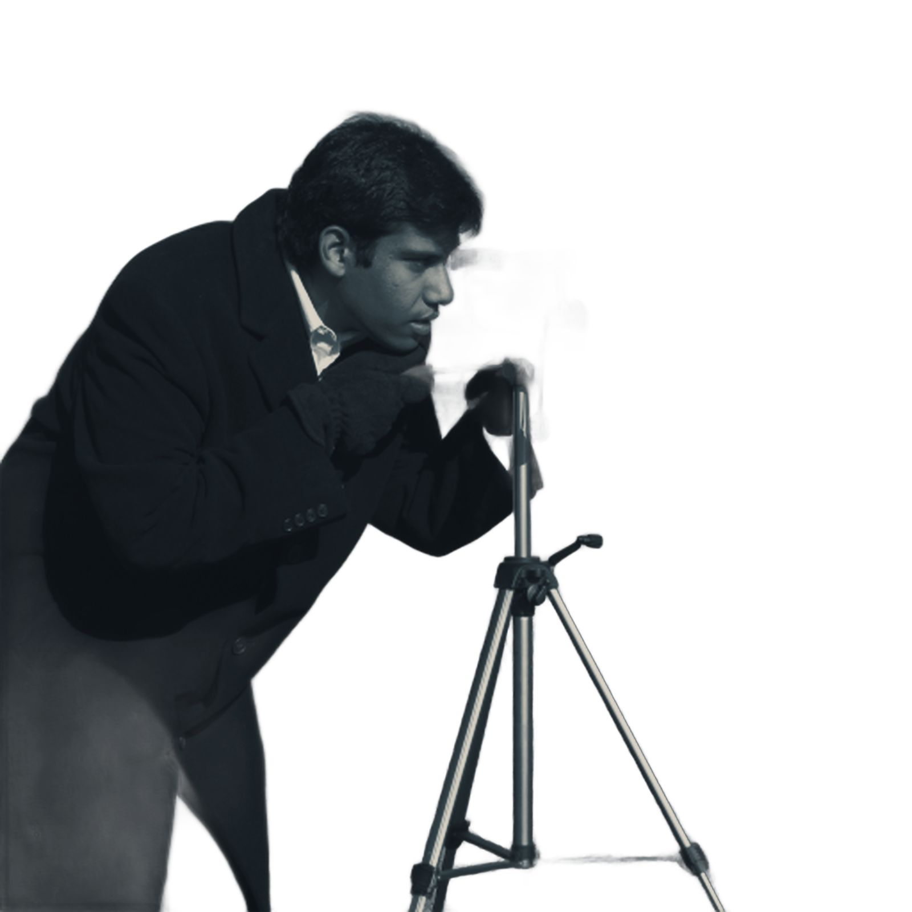

The camera issue
Frame

Slow light
Six photographers who still wait for the chemistry to finish.
Tripod logic
Why the steadiest pictures come from the least steady people.
FRAME
Issue 07
Nov 2026
€9.00